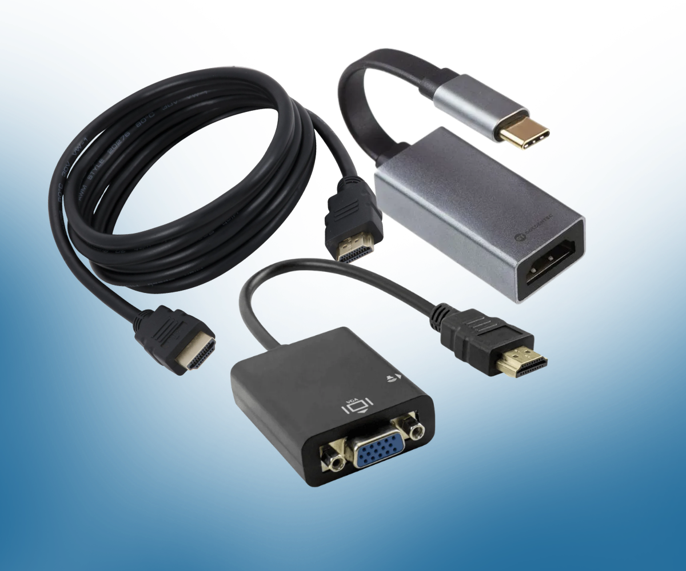
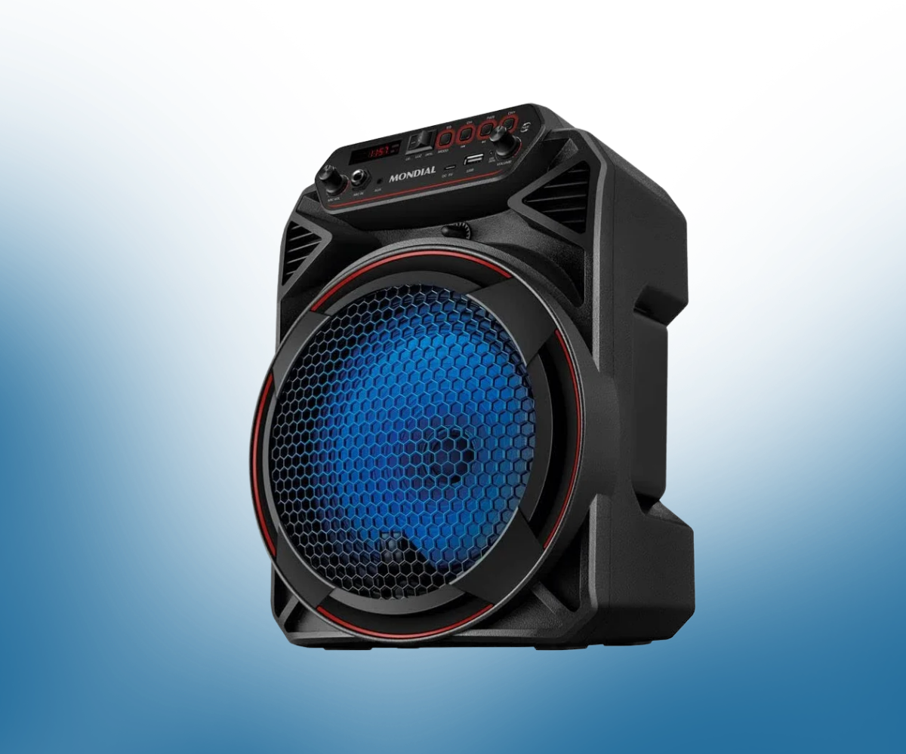
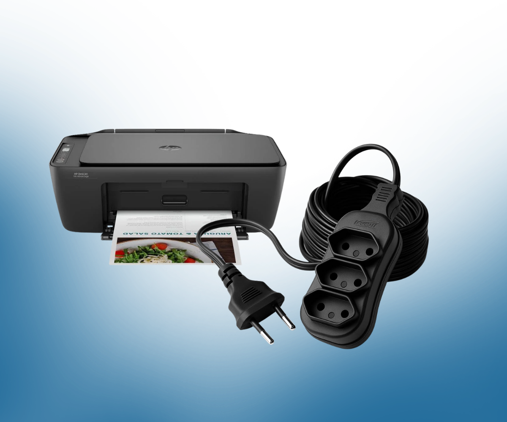
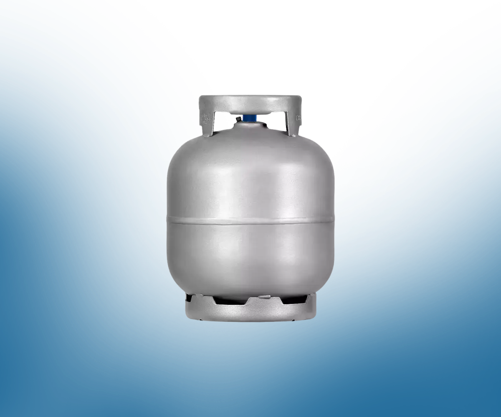

Notebooks
Para uso em sala de aula e nas atividades administrativas.
Financiamento coletivo
O Cursinho Popular Raimunda Quebradeira de Coco é gratuito e construído por uma rede de pessoas que acredita que o acesso à universidade deve ser possível para todas e todos.
Nosso desafio
As aulas, a organização e o acolhimento do cursinho são realizados de forma voluntária. Para garantir atividades mais dinâmicas e de qualidade, ainda precisamos fortalecer nossa estrutura e materiais de uso diário.
Sua ajuda apoia estudantes da rede pública, jovens das periferias, população negra, quilombola, indígena e trabalhadores em situação de vulnerabilidade social na preparação para o ENEM e vestibulares.
Itens prioritários
Doações financeiras e materiais em bom estado ajudam a manter as atividades acontecendo.
Para uso em sala de aula e nas atividades administrativas.
Para apoiar aulas, revisões, apresentações e encontros coletivos.

Adaptadores, extensões e itens que fazem os equipamentos funcionarem.

Caixas de som e periféricos de informática para as atividades do projeto.

Equipamentos e insumos que contribuam com o trabalho pedagógico e administrativo.

Usado nas ações de acolhimento e atividades realizadas pelo cursinho.
Como você pode ajudar
Contribua com recursos para a aquisição e manutenção de equipamentos e insumos.
PIX
cursinhodonaraimunda@gmail.com
Doe equipamentos e materiais em bom estado de conservação, conforme as necessidades do cursinho.
Combinar doação pelo WhatsAppEmpresas e instituições podem fortalecer a campanha e construir oportunidades junto com a comunidade.
O impacto da sua contribuição
Cada apoio fortalece uma rede de solidariedade e amplia oportunidades educacionais para jovens e adultos que encontram barreiras econômicas e sociais no caminho até o ensino superior.
Vamos conversar
Fale com a equipe para combinar uma doação, tirar dúvidas ou propor uma parceria.